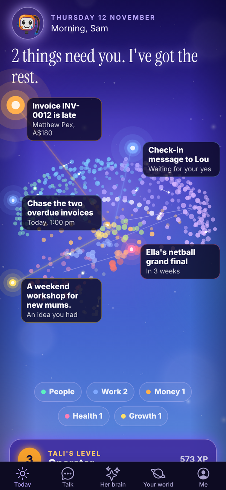

Tali HQ guide
Welcome to Tali HQ
What Tali HQ is, what each plan includes, and where to start.
Tali HQ is an app where you run your life and your business with Tali, an AI with a brain that grows with you. You chat to her like you would message a mate who never forgets. She keeps your people, your lists, your dates and your money in order, drafts your messages, emails and invoices, writes you a morning brief and helps you close the day. Everything worth keeping becomes a memory in her brain, so you never explain yourself twice.
One rule sits under everything: Tali never sends, spends or changes anything without your yes. Anything she writes to go out waits on your Today screen until you tap it. See Approvals.

Life, business or both#
When you set up, Tali asks "Do you run a business?". Say yes and you get clients, leads, invoices, receipts and rules as well as everything for your own life. Say "No, just me" and she keeps to your life: people, money, health and goals. You can switch it any time in Settings, and nothing is deleted when you do.
Where to use it#
Tali HQ runs in your browser on iPhone, Android and computer at talihq.com.au. On your phone, open it in your browser and add it to your home screen, and it works like any other app. Your account, chats and data are the same on every device.
The four plans#
Every new account starts with a free 7 day trial of Tali HQ. No card needed. When the trial ends you drop to Free unless you choose a plan. Full details are on Plans, credits and billing.
| Free | Tali HQ | Pro | Max | |
|---|---|---|---|---|
| Price | A$0 | A$19.99 a month, or A$203.90 a year | A$49.99 a month, or A$509.90 a year | A$149.99 a month, or A$1,529.90 a year |
| Chat with Tali | 250 messages a month | 1,000 credits a month | 3,000 credits a month | 10,000 credits a month |
| Her brain, your world, your people and your lists | Yes | Yes | Yes | Yes |
| Journal, notes, food and training, Sleep, Tali's library | Yes | Yes | Yes | Yes |
| Drafts, reminders and the end of day shutdown | Yes | Yes | Yes | Yes |
| Check-in from Tali | Friday check-in | Morning brief every day | Morning brief every day | Morning brief every day |
| Photos in chat | Yes | Yes | Yes | Yes |
| PDFs in chat | No | Yes | Yes | Yes |
| Web search with sources | 10 a month | Up to 150 a month | Up to 400 a month | Up to 1,000 a month |
| Deep think | 1 a month | 20 credits each | 20 credits each | 10 credits each for the first 100 a month |
| Images Tali makes | None | 30 a month | 100 a month | 300 a month |
| Gmail or Outlook sorted, Google or Outlook calendar | No | Yes | Yes | Yes |
| Invoices, Stripe, Money (business and personal), Receipts | No | Yes | Yes | Yes |
| Goals, Weekly review, health checks and Tali's weekly journal | No | Yes | Yes | Yes |
| Big brain | No | No | Yes | Yes |
| Tali's own email address | No | No | Yes | Yes |
| Night school, Rules, Patterns | No | No | Yes | Yes |
The 7 day trial Trial gives you everything in the Tali HQ column. Pro features (Big brain, Tali's email address, Night school, Rules and Patterns) are not part of the trial.
Throughout this guide, badges show which plans have a feature: Free means every plan, Tali HQ means every paid plan (and the trial), and Pro means Pro and Max.
Finding your way around#
Five tabs sit along the bottom of the app.
- Today: her brain with your day around it as stars. What's due, drafts waiting for your yes, your brief and your numbers. See Today and your morning brief.
- Talk: chat with Tali. See Talk to Tali.
- Her brain: everything she knows about you, sorted by the part of the brain it lives in. Her library and what she tidied overnight are here too. See Her brain.
- Your world: your life on one map, in six parts: People, Work, Health, Home and money, Growth and Your words. Every list, screen and tool opens from here. See Your world.
- Me: your plan and credits, top ups, Settings, and your own copy of her brain to download or share. See Settings and account.
Best first steps#
- Make your account and confirm your email. See Getting started.
- Open Talk and tell Tali three things: who matters to you, what's on your plate this week, and one thing you keep forgetting.
- Tell her about a few people ("Mum's birthday is 14 December", "Priya Nair is a new client, follow up Friday").
- On the trial or a paid plan, send your Gmail to Tali or connect Outlook from Your world, Email, and connect your calendar in Me, Settings, Connections. See Gmail and Outlook.
- Pick your morning brief time in Settings.
Questions#
Do I need Totality or Totality Nutrition to use Tali HQ?
No. Tali HQ is its own app with its own sign up. If you do use Totality or Totality Nutrition, you can link the account from Her brain so you don't have to tell Tali the same things twice. See Her brain.
Do I need a business to use Tali HQ?
No. Answer "No, just me" when Tali asks and she looks after your life: people, dates, lists, money, health and goals.
Is Tali a real person?
No. Tali is an AI. She drafts and suggests, and anything she wants to send, spend or change waits for your yes.
Is there an App Store or Google Play version?
Use Tali HQ in your browser at talihq.com.au and add it to your home screen. It works on iPhone, Android and computer. The App Store and Google Play versions are on their way.
Who makes Tali HQ?
Totality 360, the Australian team behind Totality and Totality Nutrition.
How do I get help?
Read Troubleshooting and the FAQ, or email admintotality@gmail.com and a real person will help.